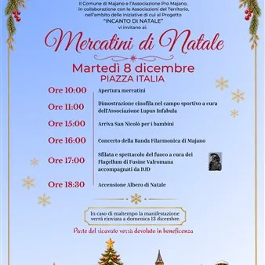

mar 8 dic · dalle 10:00
Mercatini di Natale a Majano "Incanto di Natale" | Majano
La magia delle feste invade il cuore del paese! Nell'ambito delle iniziative del progetto "𝗜𝗡𝗖𝗔𝗡𝗧𝗢 𝗗𝗜 𝗡𝗔𝗧𝗔𝗟𝗘", il 𝗖𝗼𝗺𝘂𝗻𝗲 𝗱𝗶 𝗠𝗮𝗷𝗮𝗻𝗼 e l'𝗔𝘀𝘀𝗼𝗰𝗶𝗮𝘇𝗶𝗼𝗻𝗲 𝗣𝗿𝗼 𝗠𝗮𝗷𝗮𝗻𝗼, in collaborazione con le Associazioni del Territorio, vi invitano a una giornata indimenticabile tra bancarelle, musica…
 Indicazioni
Indicazioni
- Costi e prenotazioni
- Costo non indicato · Prenotazione non indicata
- Programma
- Programma da verificare. Apri la fonte ufficiale per orari e possibili aggiornamenti.
- In caso di maltempo
- Nessuna indicazione specifica pubblicata.
- Note
- Acquisito automaticamente dalla fonte.
L’EVENTO
Descrizione completa
La magia delle feste invade il cuore del paese! Nell'ambito delle iniziative del progetto "𝗜𝗡𝗖𝗔𝗡𝗧𝗢 𝗗𝗜 𝗡𝗔𝗧𝗔𝗟𝗘", il 𝗖𝗼𝗺𝘂𝗻𝗲 𝗱𝗶 𝗠𝗮𝗷𝗮𝗻𝗼 e l'𝗔𝘀𝘀𝗼𝗰𝗶𝗮𝘇𝗶𝗼𝗻𝗲 𝗣𝗿𝗼 𝗠𝗮𝗷𝗮𝗻𝗼, in collaborazione con le Associazioni del Territorio, vi invitano a una giornata indimenticabile tra bancarelle, musica, spettacoli e solidarietà (parte del ricavato verrà infatti devoluto in beneficenza). 𝗜𝗟 𝗣𝗥𝗢𝗚𝗥𝗔𝗠𝗠𝗔 𝗗𝗘𝗟𝗟𝗔 𝗚𝗜𝗢𝗥𝗡𝗔𝗧𝗔: 𝗢𝗿𝗲 𝟭𝟬:𝟬𝟬 – Apertura mercatini 𝗢𝗿𝗲 𝟭𝟭:𝟬𝟬 – Dimostrazione cinofila nel campo sportivo a cura dell'𝗔𝘀𝘀𝗼𝗰𝗶𝗮𝘇𝗶𝗼𝗻𝗲 𝗟𝘂𝗽𝘂𝘀 𝗜𝗻𝗳𝗮𝗯𝘂𝗹𝗮 𝗢𝗿𝗲 𝟭𝟱:𝟬𝟬 – Arriva 𝗦𝗮𝗻 𝗡𝗶𝗰𝗼𝗹𝗼̀ per i bambini 𝗢𝗿𝗲 𝟭𝟲:𝟬𝟬 – Concerto della 𝗕𝗮𝗻𝗱𝗮 𝗙𝗶𝗹𝗮𝗿𝗺𝗼𝗻𝗶𝗰𝗮 𝗱𝗶 𝗠𝗮𝗷𝗮𝗻𝗼 𝗢𝗿𝗲 𝟭𝟳:𝟬𝟬 – Sfilata e spettacolo del fuoco a cura dei 𝗙𝗹𝗮𝗴𝗲𝗹𝗹𝘂𝗺 𝗱𝗶 𝗙𝘂𝘀𝗶𝗻𝗲 𝗩𝗮𝗹𝗿𝗼𝗺𝗮𝗻𝗮 accompagnati da 𝗗𝗝𝗗 𝗢𝗿𝗲 𝟭𝟴:𝟯𝟬 – Accensione dell'Albero di Natale ☔ In caso di maltempo la manifestazione verrà rinviata a 𝗗𝗼𝗺𝗲𝗻𝗶𝗰𝗮 𝟭𝟯 𝗗𝗶𝗰𝗲𝗺𝗯𝗿𝗲.
IL PROGRAMMA
Programma e orari
Appuntamenti raccolti dalle fonti elencate. Dove manca un orario, non è ancora disponibile in questa scheda.
Programma pubblicato
- Dal 2026-12-08 al 2026-12-08
INFORMAZIONI UTILI
Prima di partire
- Controllare la fonte prima di partire.
ORGANIZZAZIONE